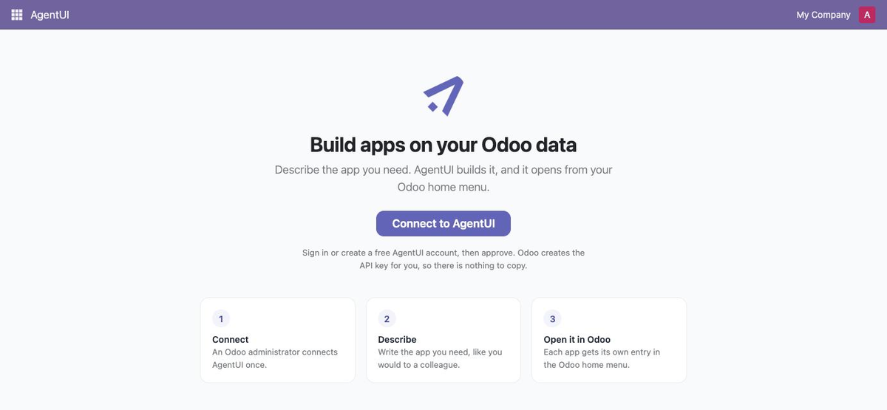
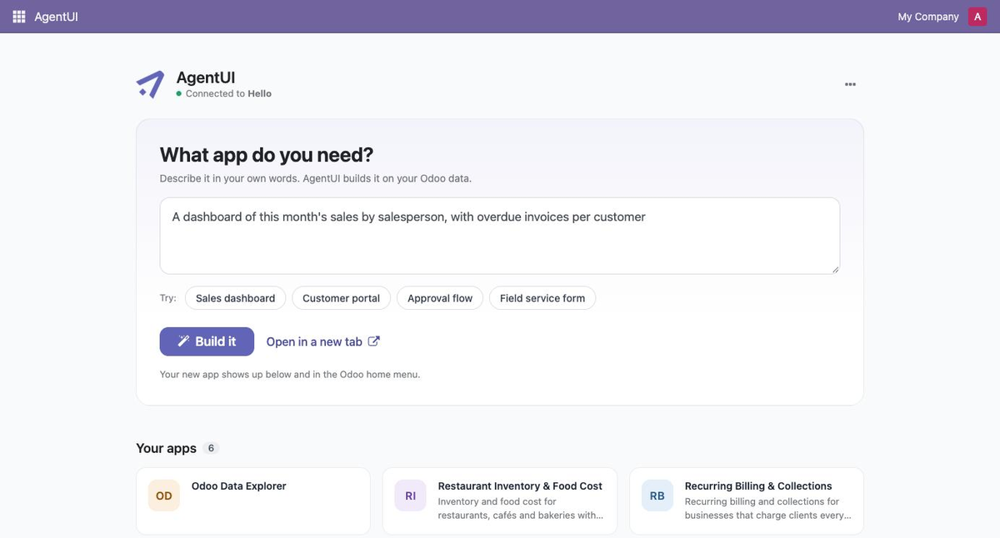
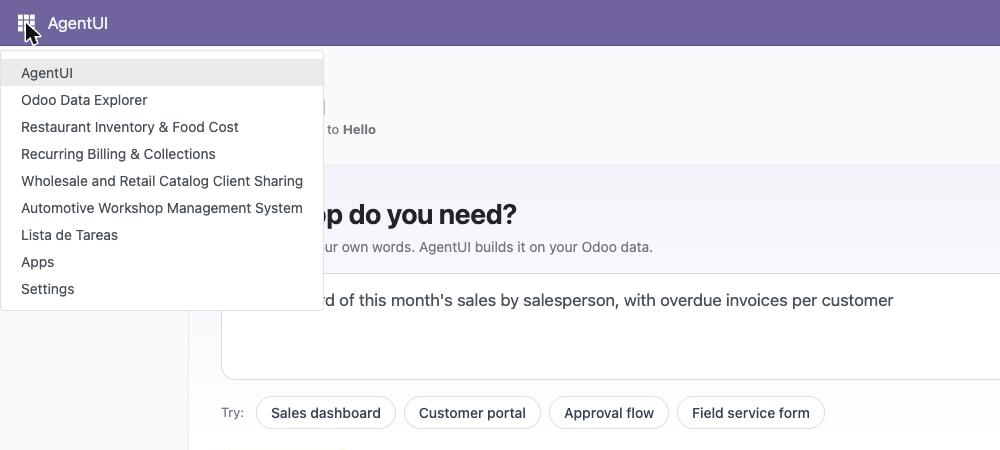
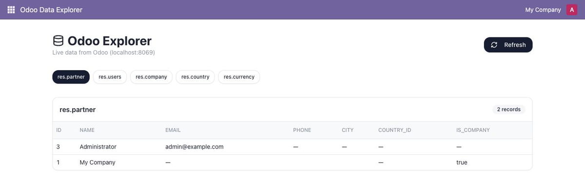

AI App Builder for Odoo
Describe the app you need. AgentUI builds it on your Odoo data, and it opens from your Odoo home menu. No code.
Odoo 18 Community and Enterprise · Odoo.sh and on-premise · Free AgentUI account to start
Describe the app you need. AgentUI builds it on your Odoo data, and it opens from your Odoo home menu. No code.
Odoo 18 Community and Enterprise · Odoo.sh and on-premise · Free AgentUI account to start
Three steps, all inside Odoo.
Install the module and open the new AgentUI menu. An administrator presses Connect to AgentUI, signs in (or creates a free account) and approves. Odoo creates its own API key, so there is nothing to copy or paste.


Type what you need in What app or dashboard do you need?, or start from an idea: a sales dashboard, a customer portal, an approval flow. Press Build it and the AgentUI builder opens right inside Odoo, with the chat and a live preview.
Every app gets its own entry in the Odoo home menu and opens full screen inside Odoo. Your team uses it next to Sales, Invoicing and Inventory.


Custom apps for the work Odoo's standard screens don't cover.
Sales, invoices, stock and CRM pipeline on one screen, from your live Odoo data.
Clients and suppliers see their own orders and invoices without an Odoo user.
Quotes, discounts and purchases that wait for the right person to approve.
Visit reports, checklists and photos, filled in on site and linked to the customer.
Agents that look up customers, create leads and prepare sales orders in Odoo.
Warehouse, sales reps and technicians work from their phone.
AgentUI uses the standard Odoo external API (XML-RPC) over HTTPS.
No. Odoo Online doesn't allow third-party modules. Use it on Odoo.sh or on your own server (on-premise).
Both. The module needs only Odoo's base and web modules, on Odoo 18.
Yes, over HTTPS. AgentUI calls your Odoo's external API, so an Odoo that only runs on a private network can't connect.
The module is free. You need an AgentUI account, and you can start with a free one. Plans are on agentui.ai.
At Connect: your Odoo address, database name, the administrator's login and the API key Odoo created. After that, your apps read and write only the records they use, through Odoo's API and its access rules. When someone opens an app, Odoo sends their login so AgentUI can sign them in.
Every internal Odoo user sees the apps in the home menu. Inside each app, AgentUI's own users and roles decide what they can do.
Open the AgentUI menu, press ⋯ and choose Disconnect. Odoo removes the apps from its menu and AgentUI revokes the module's access. Your apps in AgentUI keep their Odoo connection; to cut it too, remove the Odoo integration in AgentUI or delete the "AgentUI" API key in Odoo (Preferences › Account Security).
The same as Disconnect: the apps leave the Odoo menu and, when AgentUI can be reached, the module's access is revoked. Nothing is deleted in AgentUI, and the Odoo API key stays until you delete it.
Install the module, connect once and describe what you need.
Create a free AgentUI accountDashboards, portales de clientes, aprobaciones, formularios de campo y agentes de IA conectados a Odoo. Describe la app que necesitas y AgentUI la construye sobre tus clientes, pedidos de venta, facturas, productos e inventario. Sin programar.
Para Odoo 18 Community y Enterprise, en Odoo.sh y on-premise. Cada app aparece en el menú principal de Odoo y se abre dentro de Odoo.